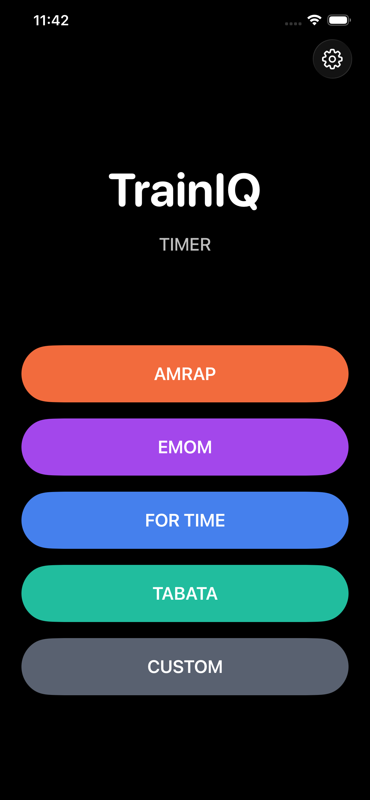
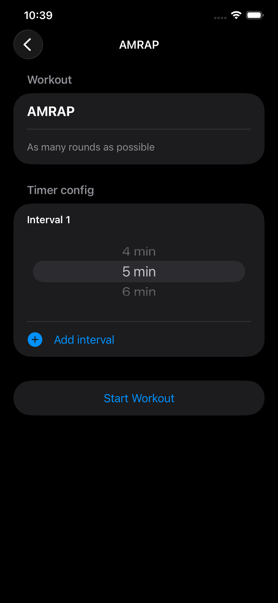
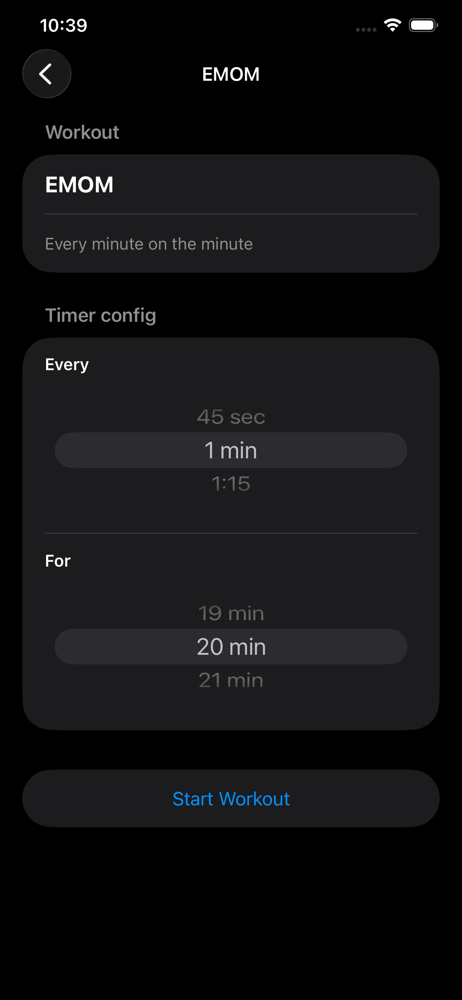
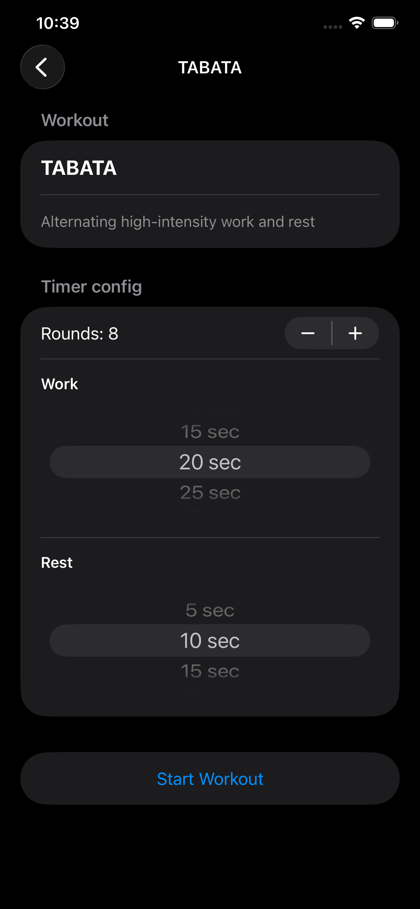
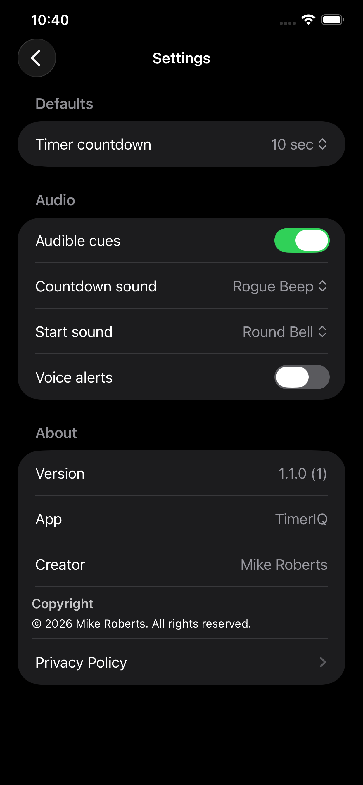

Mode-Specific Setup
Each workout mode gets the right controls: wheel pickers, steppers, interval add/remove actions, and dynamic timer options for that format.
A focused iPhone interval timer for training sessions. Configure your workout, launch with one tap, and stay on pace with clear visual, audio, and optional voice cues.
TrainIQ covers the full workout flow: pick a mode, tune your timing, start quickly, then run your session with pause, skip, and reset controls.
Each workout mode gets the right controls: wheel pickers, steppers, interval add/remove actions, and dynamic timer options for that format.
Start or pause any session instantly, then skip or reset without leaving the timer view.
Get countdown and start sounds, plus optional voice alerts for 3-2-1 and work/rest transitions.
Configure default countdown length, choose cue sounds, and toggle audible cues or voice alerts in Settings.
Timer selections are persisted by mode so your last setup is ready the next time you train.
Your timer presets and settings are stored locally on device for a private, no-account workflow.
Switch quickly between common training structures with dedicated setup screens for each one.
As many rounds as possible. Configure one or multiple intervals and optional rest between intervals.
Every minute on the minute. Set both interval frequency and total session duration.
Finish as fast as possible before your selected time cap.
Alternating high-intensity work and rest with configurable rounds, work time, and rest time.
Build your own work/rest structure with editable intervals and rounds.
A quick look at the live app flow across home, mode setup, and settings.




